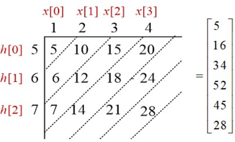
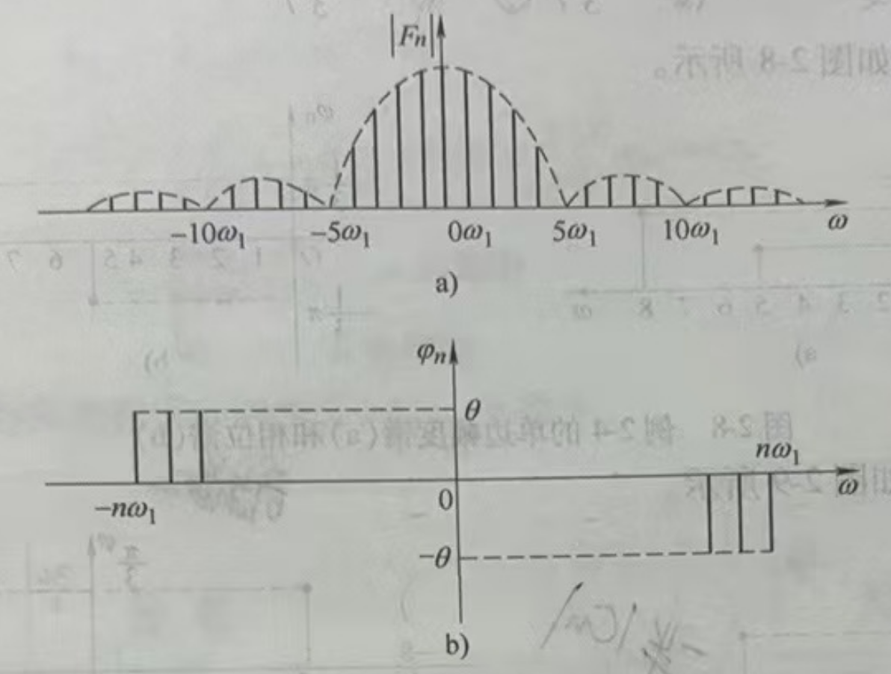

信号分析基础
1 信号与系统的基本概念
信号定义
信号是信息的载体，信息是信号的内涵。
信号的分类
- 连续时间信号 ⇔ 离散时间序列
- 周期信号 ⇔ 非周期信号
- 确定性信号 ⇔ 随机信号
- 能量信号 ⇔ 功率信号。能量信号绝对平方可积（和），否则称为功率信号。
- 因果信号 ⇔ 反因果信号。右边信号就是因果信号，左边信号就是反因果信号。
连续与离散信号的运算
- 反褶
- 移位
- 尺度变换
- 加、减、乘、标量乘
- 差分运算：向前差分：\(\nabla x[n] = x[n+1] - x[n]\)；向后差分：\(\Delta x[n] = x[n] - x[n-1]\)。且 \(\nabla x[n] = \Delta x[n-1]\)。
- 卷积运算：连续信号的卷积分：\(\int_{-\infty}^{\infty} f_1(\tau) f_2(t-\tau) d\tau\)；离散信号的卷积：\(x[n] * y[n] = \sum_{k=-\infty}^{\infty} x[k] y[n-k]\)。卷积运算的性质：交换律、分配律、结合律。
- 离散线性卷积计算示例：

常见的信号序列
- 正弦类：\(f(t)=A\cos(\omega t+\varphi)\)。根据欧拉恒等式，正弦函数信号可以写为：\(\sin(\omega t) = \frac{e^{j\omega t}-e^{-j\omega t}}{2j}\)，\(\cos(\omega t) = \frac{e^{j\omega t}+e^{-j\omega t}}{2}\)。
- 指数类：\(f(t)=Ae^{st}\)。根据欧拉等式，指数函数信号可以写为：\(e^{j\omega t} = \cos(\omega t) + j\sin(\omega t)\)。
- 单位冲激信号：\(\boxed{f(t)=\delta(t)=\begin{cases} \infty & t = 0\\0 & t\neq 0\end{cases}}\) 且有 \(\boxed{\int_{-\infty}^{\infty} \delta(t) dt=1}\)，且有如下筛选特性：\(\int_{-\infty}^{\infty}f\left(t\right)\delta\left(t\right)dt=\int_{0-}^{0+}f\left(t\right)\delta\left(t\right)dt=f\left(0\right)\int_{0-}^{0+}\delta\left(t\right)dt=f\left(0\right)\)
- 单位阶跃信号：\(\boxed{f(t)=u(t)=\begin{cases} 1 & t > 0\\0 & t < 0\end{cases}}\).
- 门函数：\(\boxed{\prod(\frac{t}{\tau}) = u(t+\frac{\tau}{2}) - u(t-\frac{\tau}{2}) = \begin{cases} 1 & |t| < \frac{\tau}{2} \\ 0 & others \end{cases}}\)；矩形序列：\(R_N(n) = \begin{cases} 1 & 0\leq n\leq N-1 \\ 0 & others \end{cases}\)。
- 内插函数信号（辛格函数）：\(sinc(x) = \frac{\sin(x)}{x}\)。
系统
- 直接理解成这个就行：\(y(t)=T[x(t)]\)
- 连续系统与离散系统
- 线性系统与非线性系统。线性系统要满足可加性和比例性，即：\(T[x_1(t)+x_2(t)]=T[x_1(t)]+T[x_2(t)]\)、\(T[a_1x_1(t)]=a_1y_1(t)\)。一般来说，带常数就不是线性系统，同时不满足比例性和可加性。
- 时变系统与时不变系统。时不变系统要满足 \(T[x(t-t_0)]=y(t-t_0)\) 或 \(T[x(n-m)]=y(n-m)\)
- 判断线性、时不变性的关键点在于，套用公式时，要明确是对 \(x(t)\) 或 \(x(n)\) 进行变换（即 \(T[x(t)]\) 或 \(T[x(n)]\)），还是对 \(t\) 或 \(n\) 进行变换（即 \(y(t)\) 或 \(y(n)\)）。
- 同时具有线性和时不变性的系统成为线性时不变系统，也即 LTI 系统
- 因果系统与非因果系统。如果输出取决于未来的输入则成为非因果系统。非因果系统是不可物理实现的
- 稳定系统。输入有界且输出也有界，称为稳定系统，否则称为不稳定系统
- 零输入响应：输入信号为零，仅由系统初始状态(系统没有外部激励时系统的固有状态)单独作 用于系统而产生的输出响应，用 \(y_{zi}(t)\) 表示
- 零状态响应：忽略系统的初始状态，只由外部激励作用于系统而产生的输出响应，用 \(y_{zs}(t)\) 表示
- 全响应：\(y_{zi}(t) + y_{zs}(t)\)
2 连续信号的傅里叶变换
Fourier 级数

- 三角形式的傅里叶级数：\(\boxed{f\left(t\right)=a_{0}+\sum_{n=1}^{\infty}\left(a_{n}\cos n\omega_{1}t+b_{n}\sin n\omega_{1}t\right)}\)；余弦形式：\(f\left(t\right)=c_{0}+\sum_{n=1}^{\infty}c_{n}\cos\left(n\omega_{1}t+\varphi_{n}\right)\)；正弦形式：\(f\left(t\right)=d_{0}+\sum_{n=1}^{\infty}d_{n}\sin\left(n\omega_{1}t+\theta_{n}\right)\)
- 直流分量：\(a_{0}=\frac{1}{T_{1}}\int_{0}^{T_{1}}f\left(t\right)dt=\frac{1}{T_{1}}\int_{-\frac{T_{1}}{2}}^{\frac{T_{1}}{2}}f\left(t\right)dt\)
- 余弦分量系数：\(a_{n}=\frac{2}{T_{1}}\int_{0}^{T_{1}}f\left(t\right)\cos n\omega_{1}tdt=\frac{2}{T_{1}}\int_{-\frac{T_{1}}{2}}^{\frac{T_{1}}{2}}f\left(t\right)\cos n\omega_{1}tdt\)
- 正弦分量系数：\(b_{n}=\frac{2}{T_{1}}\int_{0}^{T_{1}}f\left(t\right)\mathrm{sin}n\omega_{1}t\mathrm{d}t=\frac{2}{T_{1}}\int_{-\frac{T_{1}}{2}}^{\frac{T_{1}}{2}}f\left(t\right)\mathrm{sin}n\omega_{1}t\mathrm{d}t\)
- 各项关系，其中（\(n=1,2,\cdots\)）：\(\begin{cases} & a_{0}=c_{0}=d_{0} \\ & c_{n}=d_{n}=\sqrt{a_{n}^{2}+b_{n}^{2}} \\ & a_{n}=c_{n}\mathrm{cos}\varphi_{n}=d_{n}\mathrm{sin}\theta_{n} \\ & b_{n}=-c_{n}\mathrm{sin}\varphi_{n}=d_{n}\mathrm{cos}\theta_{n} \\ & \tan\theta_{n}=\frac{a_{n}}{b_{n}} \\ & \tan\varphi_{n}=-\frac{b_{n}}{a_{n}} \end{cases}\)
- 复指数形式的傅里叶级数：\(\boxed{f(t)=\sum_{n=-\infty}^{\infty}F_{n}e^{jn\omega_{1}t}}\)，其中 \(F_{n}=\frac{1}{T_{1}}\int_{0}^{T_{1}}f\left(t\right)e^{-jn\omega_{1}t}dt=\frac{1}{T_{1}}\int_{-\frac{T_{1}}{2}}^{\frac{T_{1}}{2}}f\left(t\right)e^{-jn\omega_{1}t}dt\)
- 周期信号的实质：一个周期信号由不同频率的谐波分量所组成。什么是谐波？可以简单理解为能够使用公式表达的、和谐的、规律的波形
- 傅里叶级数的频谱分为幅度谱和相位谱，分别对应幅频特性和相频特性
- 从傅里叶级数三角形式导出的单边频谱。幅频特性：\(\left|c_{n}\right|=\sqrt{a_{n}^{2}+b_{n}^{2}}\)；相频特性：\(\varphi_{n}=\arctan\left(\frac{-b_{n}}{a_{n}}\right)\)
- 从傅里叶级数复指数形式导出的双边频谱 幅频特性：\(\left|F_{n}\right|=\left|\frac{a_{n}-jb_{n}}{2}\right|=\frac{1}{2}\sqrt{a_{n}^{2}+b_{n}^{2}}\)；相频特性：\(\varphi_{n}=\arctan\left(\frac{-b_{n}}{a_{n}}\right)\)
- 双边频谱虽然有负频率，但负频率的出现完全是数学运算的结果，并没有任何物理意义
- 周期信号频谱的特点：离散性、谐波性、收敛性
FT
- 正变换：\(\boxed{F\left(j\omega\right)=\mathcal{F}\left[f\left(t\right)\right]=\int_{-\infty}^{\infty}f\left(t\right)e^{-j\omega t}dt}\)
- 逆变换：\(\boxed{f\left(t\right)=\mathcal{F}^{-1}\left[F\left(j\omega\right)\right]=\frac{1}{2\pi}\int_{-\infty}^{\infty}F\left(j\omega\right)e^{j\omega t}d\omega}\)
- 傅里叶变换是一对线性变换，它们之间存在一一对应的关系
- 傅里叶级数分析对象是周期信号，傅里叶变换分析对象是非周期信号
- 傅里叶级数频率定义域是离散频率、谐波频率处，傅里叶变换频率定义域是连续频率、整个频率轴
- 傅里叶级数函数值意义是频率分量的数值，傅里叶变换函数值意义是频率分量的密度值
- 函数存在傅里叶变换的充分条件：\(\int_{-\infty}^{\infty}|f\left(t\right)|dt<\infty\)
- 根据欧拉恒等式：\(F\left(j\omega\right)=\int_{-\infty}^{\infty}f\left(t\right)e^{-j\omega t}dt=\int_{-\infty}^{\infty}f\left(t\right)\cos\left(\omega t\right)dt-j\int_{-\infty}^{\infty}f\left(t\right)\sin\left(\omega t\right)dt\)
- 由上式：\(\begin{cases}R\left(\omega\right)=\int_{-\infty}^{\infty}f\left(t\right)\cos\left(\omega t\right)dt \\X\left(\omega\right)=-\int_{-\infty}^{\infty}f\left(t\right)\sin\left(\omega t\right)dt & \end{cases}\)
- 由上式：\(\boxed{\begin{cases}|F\left(j\omega\right)|=\sqrt{R^{2}\left(\omega\right)+X^{2}\left(\omega\right)} \\ \varphi\left(\omega\right)=\arctan=\frac{X\left(\omega\right)}{R\left(\omega\right)} & \end{cases}}\)
- 由上式：\(|F\left(j\omega\right)|\) 是偶函数，\(\varphi\left(\omega\right)\) 是奇函数
- 如果信号 \(f(t)\) 的傅里叶变换 \(F(\)j\(\omega )\) 当 \(\omega>\omega_\mathrm{m}\) 时均为零，则称\(f(t)\)是带限的，正实数 \(\omega_m\) 称为信号 \(f({t})\) 的带宽
- 如果信号 \(f(t)\) 存在一个正实数 \(T_\mathrm{m}\)，当\(|t|>T_\mathrm{m}\) 时，\(f(t)=0\)，则该信号是时限的，它对应于频域有一个时宽\(T_{\mathrm{m}}\)
- 带限信号在时域上是无限连续时间的，即带限信号不能是时限的；相应地，时限信号必然是无限带宽的
- 典型傅里叶变换对：
- 门信号：\(\boxed{\Pi\left(\frac{t}{\tau}\right)\xleftrightarrow{F}\tau\sin c\left(\frac{\omega\tau}{2}\right)}\)
- 单边指数信号：\(\boxed{e^{-at}u\left(t\right)\xleftrightarrow{F}\frac{1}{a+j\omega}}\)
- 双边指数信号：\(\boxed{e^{-a|t|}\left(a>0\right)\xleftrightarrow{F}\frac{2a}{a^{2}+\omega^{2}}}\)
- 单位冲激信号：\(\boxed{\delta (t)\xleftrightarrow{F}1}\)
- 直流信号 \(f(t)=E\)：\(\boxed{E\xleftrightarrow{F}2\pi E\delta(\omega)}\)
- 符号函数：\(sgn(t)\xleftrightarrow{F}\frac{2}{j\omega}\)
- 单位阶跃信号：\(\boxed{u(t) \xleftrightarrow{F} \pi\delta(\omega)+\frac{1}{j\omega}}\)
FT 的基本性质
周期信号的 FT
- 直接使用傅里叶变换的定义的前提条件是要满足绝对可积，但周期信号并不满足绝对可积的条件。而引入奇异函数后，某些不满足绝对可积的信号也可以求傅里叶变换，所以有这一节。
- 周期信号的傅里叶变换公式：\(F\left(j\omega\right)=2\pi\sum_{n=-\infty}^{\infty}F_{n}\delta\left(\omega-n\omega_{1}\right)=\omega_{1}\sum_{n=-\infty}^{\infty}F_{0}\left(jn\omega_{1}\right)\delta\left(\omega-n\omega_{1}\right)\)
- 余弦函数的傅里叶变换：\(\mathcal{F}\left[\cos\left(\omega_{0}t\right)\right]=\pi\left[\delta\left(\omega-\omega_{0}\right)+\delta\left(\omega+\omega_{0}\right)\right]\)
- 正弦函数的傅里叶变换：\(\mathcal{F}\left[\sin\left(\omega_{0}t\right)\right]=\frac{\pi}{j}\left[\delta\left(\omega-\omega_{0}\right)-\delta\left(\omega+\omega_{0}\right)\right]\)
- 周期单位冲击序列的傅里叶变换：\(\mathcal{F}[\delta_{\omega 1}(\omega)] = \omega_{1}\delta_{\omega 1}(\omega)\)
- 周期矩形脉冲序列的傅里叶变换：\(E\tau\omega_{1}\sum_{n=-\infty}^{\infty}sinc\left(\frac{n\omega_{1}\tau}{2}\right)\delta\left(\omega-n\omega_{1}\right)\)；其傅里叶系数：\(F_{n}=\frac{1}{T}F_{0}\left(jn\omega_{1}\right)=\frac{E\tau}{T}sinc\left(\frac{n\omega_{1}\tau}{2}\right)\)
抽样信号的 FT
- 时域抽样定理（奈奎斯特定理）：一个频带受限的信号 \(f(t)\)，要想抽样后能够不失真地还原出原信号，抽样频率必须大于 2 倍信号谱的最高频率。
3 连续信号的拉普拉斯变换
LT 的定义及收敛域
- 为什么要有拉普拉斯变换：傅里叶变换需要满足绝对可积的先决条件，为不收敛的函数乘上收敛因子后，就可以满足这一条件。而乘上收敛因子再求其傅里叶变换的过程，就可以视为拉普拉斯变换。
- 求法：\(\begin{cases} F\left(s\right)=\int_{-\infty}^{\infty}f\left(t\right)e^{-st}dt \\ f\left(t\right)=\frac{1}{2\pi j}\int_{\sigma-j\infty}^{\sigma+j\infty}F\left(s\right)e^{st}ds & \end{cases}\)
- 收敛域：右边信号（\(\sigma > \sigma_1\)）、左边信号（\(\sigma < \sigma_2\)）、双边信号（\(\sigma_1 < \sigma < \sigma_2\)）、时限信号（整个 s 平面）
单边 LT 的性质
单边 LT 的逆变换
- 查表法
- 部分分式展开法
- 分母的所有根均为单实根：分式划开，各部查表
- 分母的根具有共轭复根且无重复根
- 分母仅有重根
连续时间系统的 s 域分析
- 系统函数 \(H(s)\)：\(H(s)=\frac{Y_{ZS}(s)}{X(s)}\)，它与系统的输入和输出无关，描述了系统本身的特性。一旦系统的拓扑结构已定，它也就确定了，它存在的条件是系统的起始状态为零，即 \(y_{zi(0)=0}\)。
- 线性系统的稳定性：一个系统受某种干扰信号作用时，其所引起的系统响应在干扰消失后，会最终消失，即系统可以回到干扰作用前的状态，称系统是稳定的。
- 对于一般系统，系统稳定的充要条件是冲击响应 \(h(t)\) 绝对可积。
- 系统稳定性结论：
- 稳定：\(H(s)\) 的全部极点位于 \(s\) 域的左半平面
- 临界稳定：\(H(s)\) 在虚轴上有 \(p=0\) 的单极点或一对共轭单极点，其余极点全在 \(s\) 域的左半平面
- 不稳定：\(H(s)\) 只要有一个极点位于 \(s\) 域的右半平面，或在虚轴上有二阶或二阶以上的重极点，则系统不稳定。
4 离散信号与系统
z 变换
- \(\boxed{X\left(z\right)=\sum_{-\infty}^{\infty}x\left(n\right)z^{-n}}\)，其中 \(z = e^{s}\)
-
级数判断敛散性的两个方法：
- \(\rho=\lim_{n\to\infty}\left|\frac{a_{n+1}}{a_{n}}\right|\)
- \(\eta=\lim_{n\to\infty}\sqrt[n]{\left|a_{n}\right|}\)
-
z 变换的收敛域：
- 有限长序列：\(0<|z|<\infty\)，但两边是否能取等号要看情况，如果求和下界小于零，则不能取无穷的等号；求和上界大于零则不能取零的等号
- 右边序列：\(|z|>\lim\limits_{n\to\infty}\sqrt[n]{|x\left(n\right)|}=R_{x1}\)
- 左边序列：\(|z|<\frac{1}{\lim\limits_{n\to\infty}\sqrt[n]{\left|x\left(-n\right)\right|}}=R_{x2}\)
- 双边序列：\(R_{x1}<|z|<R_{x2}\)
z 逆变换
- 部分分式法
- 幂级数法（长除法，也就是硬除）
z 变换的性质与定理
- 线性：\(Z\left[ax(n)+by(n)\right]=aX(z)+bY(z)\quad\left(R_1<\left|z\right|<R_2\right)\)，收敛域取交集
- 位移性：\(Z\left[x(n-n_0)\right]=z^{-n_0}X(z)\)，收敛域只会影响 \(z=0\) 和 \(z=\infty\) 处
- 尺度变换：\(Z[a^nx(n)]=X(\frac{z}{a})~~~(R_{x1}<\left|\frac{z}{a}\right|<R_{x2})\)
- 序列线性加权：\({Z}\left[nx(n)\right]=-z\frac{\mathrm{d}X\left(z\right)}{\mathrm{d}z}\quad\left(R_{x1}<\left|z\right|<R_{x2}\right)\)
- 初值定理：\(x(0)=\lim_{z\to\infty}X(z)\)
- 终值定理：\(\lim_{n\to\infty}x(n)=\lim_{z\to1}(z-1)X(z)\)
离散系统的时域分析与系统函数
- z 变换法解常系数差分方程
- 等式两边单边 z 变换（利用 z 变换的位移性质）
- 对不包含 \(X(z)\) 的部分应用 z 逆变换，求得零输入响应
- 对包含 \(X(z)\) 的部分应用 z 逆变换，先求 \(x(n)\) 的 z 变换得到 \(X(z)\)，带入后求 z 逆变换，求得零状态响应
- 相加得全响应
- 定义离散系统的系统函数：\(\boxed{H(z)=\frac{Y_{zs}(z)}{X(z)}=\frac{\sum_{j=0}^{M}b_{j}z^{-j}}{\sum_{i=0}^{N}a_{i}z^{-i}}}\)，且可以利用 \(H(z)\) 求单位脉冲响应 \(h(t)\)
- 离散系统的稳定性
- 系统稳定性的定义：当输入信号有界，输出信号也必定有界
- 系统输出等于单位脉冲响应与系统输入的卷积：\(y(n)=h(n)*x(n)\)
- \(H(z)\) 的极点：
- 在单位圆上：\(h(n)\) 的累加和与该极点的对应项为复正弦序列
- 在单位圆内：\(h(n)\) 的累加和与该极点的对应项为指数衰减序列
- 在单位圆外：\(h(n)\) 的累加和与该极点的对应项为指数递增序列
- 显然若为复正弦、递增，会导致 \(h(n)\) 不绝对可和，进而导致系统不稳定，因此若说系统是稳定的，\(H(z)\) 的极点必须均在单位圆内
5 离散傅里叶变换（DFT）
有限长序列的 DFT
- 旋转因子：\(W^n_N=e^{-j\frac{2\pi}{N}n}\)
- 共轭对称性
- 周期性
- 可约性，就是 \(n\) 和 \(N\) 可以约分
- 正交性
- 离散傅里叶变换定义
- 正变换：\(\boxed{X(k)=\mathrm{DFT}[x(n)]=\sum_{n=0}^{N-1}x(n)W_N^{kn}\quad0\leq k\leq N-1}\)
- 逆变换：\(\boxed{x(n)=\mathrm{IDFT}[X(k)]=\frac{1}{N}\sum_{k=0}^{N-1}X(k)W_N^{-kn}\quad0\leq n\leq N-1}\)
DFT 的性质
- 线性性质：可加性和比例性
- 共轭对称性
- 循环（圆周）移位特性，若：\(x[n]\overset{\mathrm{DFT}}{\operatorname*{\longleftrightarrow}}X[k]\)
- 时域的循环位移对应频域的相移，\(x[(n+m)_N]\overset{\mathrm{DFT}}{\operatorname*{\longleftrightarrow}}W_N^{-km}X[k]\)
- 时域的相移对应频域的循环位移，\(W_N^{ln}x[n]\overset{\mathrm{DFT}}{\operatorname*{\longleftrightarrow}}X[(k+l)_N]\)
- 循环（圆周）卷积
- 若 \(x[n]\) 的长度为 \(N\)，\(h[n]\)的长度为 \(M\)，则 \(L\geq N+M-1\) 点循环卷积等于 \(x[n]\) 与 \(h[n]\) 的线性卷积。
- 循环卷积计算示例：
- 循环卷积定理：
- 时域卷积定理：\(x_1[n]x_2[n]\leftarrow\xrightarrow{\mathrm{DFT}}\frac1NX_1[k]\textcircled {n}X_2[k]\)
- 频域卷积定理：\(x_1[n]\textcircled n\) \(x_2[n]\longleftarrow\xrightarrow{\mathrm{DFT}}X_1[k]X_2[k]\)
6 快速傅里叶变换（FFT）
按时间抽取的基-2FFT算法
按频率抽取的基-2FFT算法
时间复杂度
- 正常算法的时间复杂度：乘法：\(N^2\)，加法：\(N(N-1)\)
- 两种基-2FFT算法的复杂度：乘法：\(\frac{N}{2}\mathrm{log}_2N\)，加法：\(N\mathrm{log}_2N\)
逆快速傅里叶变换（IFFT）
- \(x[k]=\frac{1}{N}(\mathrm{DFT}\{X^*[m]\})^*\)
- 意即：将 \(X[m]\) 选取共轭，用 \(FFT\) 流图计算 \(DFT\{X^*[m]\}\)，再取共轭并除以 \(N\)
FFT 应用
- 利用 \(N\) 点复序列 FFT 计算 2 个 \(N\) 点实序列 FFT
- 把两个实序列构造为 \(x_1[k]+jx_2[k]\)
- 计算 FFT 得到 \(Y[m]\)
- \(X_1[m]=\frac{1}{2}\left\{Y[m]+Y^*[(N-m)_N]\right\}\)
- \(X_2[m]=\frac{1}{2j}\left\{Y[m]-Y^*[(N-m)_N]\right\}\)
- 利用 \(N\) 点复序列 FFT 计算 \(2N\) 点实序列 FFT
- 把 \(2N\) 实序列分解为：\(\begin{cases}x_{1}[k]=x[2k]\\x_{2}[k]=x[2k+1]&\end{cases}\)
- 构造 \(x_1[k]+jx_2[k]\)
- 计算 FFT 得到 \(Y[m]\)
- \(2N\) 点实序列的 FFT 的前 \(N\) 点：\(X[m]=X_1[m]+W_{2N}^mX_2[m]\)
- \(2N\) 点实序列的 FFT 的后 \(N\) 点：\(X[m+N]=X_1[m]-W_{2N}^mX_2[m]\)
- 利用 \(N\) 点复序列 FFT 计算 \(N\) 点复序列 IFFT
- 频谱混叠：使抽样频率 \(f_{sam}\) 满足 \(f_{sam}\geq 2f_{m}\)
- 泄露现象
- 原因：原函数和矩形函数在时域上相乘，新函数的频谱相当于频域上卷积，即原函数的频谱与 \(sinc\) 函数做卷积操作，可想而知频谱会向高频分散，就好像泄露一样
- 提高分辨率措施：增加窗函数的长度 \(N\)，使之满足 \(N\geq \frac{f_{sam}}{\Delta f_c}=\frac{f_{sam}}{f_2-f_1}\)，其中 \(\Delta f_c\) 为分辨率。该公式同样可以确定最短采集时间，式子两侧同时乘以 \(\frac{1}{f_{sam}}\)，即每两个抽样点的时间间隔 \(T\)，可得最短采集时间 \(T_p=\frac{1}{\Delta f_c}\)，即分辨率的倒数。
- 栅栏现象：DFT 点数 \(L\geq\frac{f_{sam}}{\Delta f_d}\)，其中 \(\Delta f_d\) 为谱线间隔。实际上，\(L\) 一般取 2 的次幂，即 \(L=2^{\lceil \log_2{\frac{f_{sam}}{\Delta f_d}} \rceil}\)
| 窗函数类型 | 主瓣有效宽度 | 旁瓣峰值衰耗 |
|---|---|---|
| 矩形 (Rectangle) | 2π / N | 13 dB |
| 汉宁 (Hanning) | 4π / N | 31 dB |
| 海明 (Hamming) | 4π / N | 41 dB |
| 布莱克曼 (Blackman) | 6π / N | 57 dB |
| 凯塞 (Kaiser) b=5.86 | 5π / N | 57 dB |
*主瓣有效宽度越小越好、旁瓣峰值衰耗越大越好，但往往鱼和熊掌不可兼得，只能取一个平衡
7 数字滤波器设计
滤波器的基本概念
- 概念 离散时间系统，输入、输出均为数字信号。可以根据需要，通过数值运算改变信号频率成分的相对比例，或者有选择性的滤除输入信号的某些频率成分
- 按功能分类
- 按单位脉冲响应长度分类
FIR滤波器 \(H(z)=\sum_{n=0}^{N-1}h(n)z^{-n}\)IIR(Infinite Impulse Response) 滤波器 \(H(z)=\frac{\sum_{j=0}^{M}b_{j}z^{-j}}{1+\sum_{i=1}^{N}a_{i}z^{-i}}\)
- 技术指标
- 频率响应函数：\(H(e^{j\omega})=\left|H(e^{j\omega})\right|e^{j\theta(\omega)}\)，则：
- 幅频特性 \(\left|H(e^{j\omega})\right|\)，表示信号通过该滤波器后各频率成分振幅衰减情况
- 相频特性 \(\theta(\omega)\)，反应各频率成分通过滤波器后各频率成分在时间上的延时情况
- 理想数字滤波器
- 通带衰减(dB) \(\boxed{A_{\mathrm{p}}=-20\lg(1-\delta_{\mathrm{p}})}\)
- 阻带衰减(dB) \(\boxed{A_{\mathrm{s}}=-20\lg\delta_{\mathrm{s}}}\)
- 实际低通数字滤波器
- \(\omega_\mathrm{p}\)：通带截止频率
- \(\omega_\mathrm{s}\)：阻带截止频率
- \(\delta_{\mathfrak{p}}\)：通带波动
- \(\delta_{\mathrm{s}}\)：阻带波动
常用模拟滤波器的设计方法
- 由幅度平方函数确定。看不懂，做题碰到了再说吧。
- Butterworth 低通逼近
- \(\left|H(\mathrm{j}\Omega)\right|^2=\frac{1}{1+\left(\Omega/\Omega_\mathrm{c}\right)^{2N}}\)
- 具有单调下降的幅频特性
- 最大平坦性 \(|H(\mathrm{j}\Omega)|^2\) 在 $\Omega=0 $ 点的 \(1\) 到 \(2N-1\) 阶导数为零
- 3dB 不变性 不管 N 为多少，所有的特性曲线都通过 -3dB 点，或者说衰减为 3dB
- Butterworth 模拟低通滤波器的设计步骤
- 步骤 1：确定模拟滤波器的阶数 \(N\)，\(N\geq\frac{\lg(\frac{10^{0.1A_s}-1}{10^{0.1A_p}-1})}{2\lg(\Omega_s/\Omega_p)}\)
- 步骤 2：确定模拟滤波器的 \(3dB\) 截频 \(\Omega_c\)，\(\frac{\Omega_\mathrm{p}}{(10^{0.1A_\mathrm{p}}-1)^{\frac{1}{2N}}}\leq\Omega_\mathrm{c}\leq\frac{\Omega_\mathrm{s}}{(10^{0.1A_\mathrm{s}}-1)^{\frac{1}{2N}}}\)
- *步骤 3：计算模拟滤波器的系统函数极点
- *步骤 4：得到模拟低通滤波器的系统函数 \(H_L(s)\)
- 其中，步骤 3、4，也可以通过查表法得到
无限长单位脉冲响应 IIR 数字滤波器的设计
- 脉冲响应不变法（线性变换）
- 对应关系：\(H(s)=\sum\limits_{i=1}^{N}\frac{A}{s-p_i}\) 和 \(\boxed{H(z)=\sum\limits^{N}_{i=1}\frac{A_i}{1-e^{p_iT} z^{-1}}}\)
- \(\omega\) 和 \(\Omega\) 的关系：\(\Omega=\frac{\omega}{T}\)
- 由上面的式子可知，求出 \(A_i\) 和 \(p_i\) 是写出两种式子的关键
- 优点：时域逼近良好，线性（\(\Omega=\frac{\omega}{T}\)）
- 缺点：频率响应的混叠失真，只适用于限带的模拟滤波器（低通、带通）
- 双线性变换法（非线性变换，\(tan\) 函数）
- 对应关系：\(\boxed{H\left(z\right)=H_{a}\left(s\right)|_{s=\frac{2}{T}\frac{1-z^{-1}}{1+z^{-1}}}=H_{a}\left(\frac{2}{T}\frac{1-z^{-1}}{1+z^{-1}}\right)}\)
- \(\omega\) 和 \(\Omega\) 的关系：\(\Omega=\frac{2}{T}\tan(\frac{\omega}{2})\)
- 不用分式展开，比较友好
- 优点：避免了混叠失真（以引入非线性为代价），能直接用于设计低通、带通、高通、带阻滤波器，保持原有的幅频性能
- 缺点：转换前后的频率呈非线性关系（可以通过频率预畸变减轻），产生相频特性失真
有限长脉冲响应数字滤波器设计（FIR）
- \(H\left(z\right)=\sum_{j=0}^{N-1}b_{j}z^{-j}\) 和 \(h(n)=\sum_{i=0}^{N-1}b_jx(n-j)\)
- 线性相位是指 \(\phi(\omega)\) 是 \(\omega\) 的线性函数
- 严格线性相位系统：\(\phi(\omega)=-\alpha\omega\)
- 宽（广义）线性相位系统：\(\phi(\omega)=-\alpha\omega+\beta\)
- 四种线性相位系统
- 窗函数法设计
FIR滤波器- 核心：只需求出 \(H\left(z\right)=\sum_{n=0}^{N-1}b_{n}z^{-n}=\sum_{n=0}^{N-1}h(n)z^{-n}\) 中的 \(h(n)\)
- 由设计目标 \(H_{\mathrm{d}}(\mathrm{e}^{\mathrm{j}\omega})\) 确定
FIR的类型 (四选一) 和幅度函数 \(A_{\mathrm{d}}(\omega)\)，\(H_\text{d}(\mathrm{e}^{\mathrm{j}\omega})=A_d(\omega)e^{j\varphi_d(\omega)}\) - 根据类型确定线性相位FIR滤波器的相位 \(\varphi_{\mathrm{d}}(\omega)\)，\(\varphi_{\mathrm{d}}(\omega)=-\alpha\omega+\beta\quad(\beta=0, \pi/2)\)
- 根据 \(A_{\mathrm{d}}(\omega)\) 和 \(\varphi_{\mathrm{d}}(\omega)\) 通过
IDTFT求解 \(h_\mathrm{d}(n)\)，$h_\mathrm{d}(n)=\frac{1}{2\pi}\int_{-\pi}^{\pi}A_\mathrm{d}(\omega)\mathrm{e}^{\mathrm{j}\varphi_\mathrm{d}(\omega)}\mathrm{e}^{\mathrm{j}k\omega}\mathrm{d}\omega $ - 加窗截短 \(h_\mathrm{d}(n)\)，得到有限长因果序列 \(h(n)\)，\(h(\mathrm{n})=h_\mathrm{d}(\mathrm{n})w_N(\mathrm{n})\)
| 特性 | FIR | IIR |
|---|---|---|
| 严格线性相位 | 有 | 没有 |
| h(n) 长度 | 有限 | 无限 |
| 稳定性 | 极点全部在原点（永远稳定），无稳定性问题 | 有稳定性问题 |
| 阶数 | 高 | 低 |
| 结构 | 非递归 | 递归系统 |
| 运算误差 | 无反馈，运算误差小 | 有反馈，由于运算中的四舍五入会产生极限环 |
| 快速算法 | 用 FFT 实现，减少运算量 | 无快速运算方法 |
需要关注的课后习题
概表
| 章节 | 占比 | 关注习题 |
|---|---|---|
| 一 | 15% | 1-1、1-4、1-5、1-6 |
| 二 | 20% | 2-2、2-4、2-5、2-6、2-7、2-8、2-10、2-15、2-17、2-18、2-19、2-20、2-21 |
| 三 | 0~2% | 无 |
| 四 | 20% | 4-1、4-3、4-6、4-12、4-13、4-14、4-16、4-17 |
| 五 | 15% | 5-1、5-2、5-10、5-12 |
| 六 | 15% | 6-1、6-2、6-6、6-8 |
| 七 | 13~15% | 7-2、7-3、7-4、7-13、7-14 |
掌握函数周期性，频率带派周期，否则非周期 -> 选填 线性、时不变性 -> 大题 1 道 掌握常见信号，知道单位冲击信号具有筛选性 知道常见函数的表示，单位阶跃、门函数
1-7/15不用看
涉及时移、频移、尺度变换、对称、求傅里叶变换
2-19 1 2 3 2-20 逆变换题目
大题 第二章 正变换一题 、逆变换一题
第一章
P24
- 1-1
- 1-4 判断一个序列是否是周期的
- 1-5 数模转换、求解周期
- 1-6 判断系统的线性、时不变性
第二章
- 43-52 页的例题
P67
- 2-2
- 2-4
- 2-5
- 2-6 前三道题
- 2-7
- 2-8
- 2-10
- 2-15
- 2-17
- 2-18
- 2-19
- 2-21
*关注线性、移位、尺度特性
第三章
考得少
第四章
所有例题都要看
- 4-1 7/8 不做
- 4-3
- 4-6
- 4-12
- 4-13
- 4-14
- 4-16
- 4-17
第五章（更多关注课堂上讲的内容）
P157
- 5-1 要会用公式求解有限长傅里叶变换
- 5-2
- 5-10 （1）（2）
- 5-12 （3）
第六章（更多关注课堂上讲的内容）
P192
- 6-1
- 6-2
- 6-6
- 6-8
第七章
主要是例题
P245
- 7-2
- 7-3
- 7-4
- 7-13
- 7-14
考试重点
第一章
- 周期性判定（选择），两个周期函数之和仍然是周期函数的条件是：两个函数的周期的比值是有理数
- 线性时不变判定、稳定性、因果性（简答分析）例题 1-4、1-5
- 线性
- 比例性：\(T[ax(t)]=ay(t)\)
- 可加性：\(T[x_1(t)+x_2(t)]=y_1(t)+y_2(t)\)
- 时不变性：\(T[x(t-t_0)]=y(t-t_0)\)
- 线性
- 稳定、不稳定要分别从时域和
z域判断 - 卷积，能计算线性卷积，并知道卷积结果长度
- 矩形序列 \(R_N(n)\) 的表达式：
- \(R_N(n)=u(n)-u(n-N)\)
- \(R_N(n)=\{\underline{1},1,1,\cdots,1\}\)（共 \(N\) 个 1）
- \(R_N(n)=\sum\limits_{m=0}^{N-1}\delta(n-m)=\delta(n)+\delta(n-1)+\cdots+\delta(n-N+1)\)（共 \(N\) 个单位冲击）
- 信号尺度变换：\(f(at)=\begin{cases}扩展,~~a<1\\压缩,~~a>1&\end{cases}\)
- 冲激信号：\(\int\limits_{-\infty}^{\infty}f(t)\delta(t-t_0)dt=f(t_0)\)
第二章
- A 卷 B 卷正、逆变换各一道大题（ 线性、对称 <- 大题、尺度、移位 ）
- 给典型信号，分析傅里叶变换性质
- 傅里叶级数不出大题
- 理解什么叫频谱
- 指数展开和三角级数展开的两种形式中，物理意义、单双边频谱计算、能够解决工程中的什么问题（选择、判断、填空）
- 通信系统的振幅调制和同步调制，是利用傅里叶变换的 频移 性质
- 白色谱 或均匀谱是指 傅里叶变换之后频谱为常数 \(I_0\) 的信号（也可以说，频谱在任何频率处的密度都是均匀的），冲击函数 \(\delta(t)\) 的频谱就是白色谱
- \(DTFT\) 变换是周期性函数，周期是 \(2\pi\)
- 傅里叶正逆变换具有 唯一性
- 会求解 正弦信号 的傅里叶变换
- 傅里叶变换的应用，调制
- 43~52 页例题注意
- 补练习题 2-19~21
- 周期信号傅里叶变换的特点 离散性、收敛性、谐波性
- 周期信号的傅里叶级数不用掌握
- \(f(t)\) 为 \(t\) 实偶函数、实奇函数时，傅里叶变换的结果
- 傅里叶变换存在的条件：绝对可积
- 判定因果、稳定，时域用时域判定方法，频域用频域判定方法（2 页、3 页，17 页、18页）
- 稳定
- 系统的输入有界，输出也有界
- 极点判定
- 因果
- 系统的输入不超前于输出
- 极点在单位圆内
- 稳定
- 判断 \(h(n)\) 或 \(h(t)\) 在 \(t\) 小于 0 时或 \(n\) 小于 0 时，是否恒等于 0
第四章
- 第四章所有例题都要做一遍 例题 4-4 必须会做
- 习题 4-14、4-16 必须会做
z变换的正变换和逆变换z变换存在的充要条件：无穷项级数求和必须收敛- 利用
z变换求解离散系统判断系统特性（一道大题，给一个系统，求解系统的 \(H(z)\)、判断系统是否稳定） - 收敛域（右边、左边、双边）
- 两个序列的
z变换相等，两个序列 不一定相等，还要看收敛域 - 卷积性：时域相乘、频域卷积
第五章
137、145
- 有可能计算循环卷积或者是利用 DFT 的性质做一些操作
DFT的每一个性质都会考（A 卷圆周卷积不考，B 卷会考）- \(DFT[x((n\pm M))_NR_N]=W^{\mp Mk}_{N}X(k)\)
- 要注意圆周特性 例题 5-3
- 共轭特性
DFT、DTFT、z变换的关系（5.1.3）：对有限长序列在单位圆上的 \(N\) 个等分点上计算其 \(z\) 变换，即令 \(z=e^{j\frac{2\pi}{N}k}\)，就是有限长序列的离散傅里叶变换- 求某一个点的
DFT，比如 N=5 时求 X(5) 的DFT - 若满足 \(N=M+L-1\)，则 \(N\) 点循环卷积等于线性卷积
- 如果 \(x(n)\) 为实序列，则 \(DFT[x(n)]=X(k)\) 满足 \(X(k)=X^*(N-k)\)，这意味着 \(X(k)\) 在 \(0\sim N\) 范围内，对于 \(\frac{N}{2}\) 点，\(|X(k)|\) 呈半周偶对称分布，\(\arg[X(k)]\) 呈半周奇对称分布。
- 共轭对称性：\(DFT[x^*(n)]=DFT[x^*(N-n)]\)
第六章
- 蝶形图 4 点按时间/频率抽取
- 运算量比较
DFT加法：\(N-1\)，乘法：\(N^2\)FFT加法：\(N\log_2 N\)，乘法：\(\frac{N}{2}\log_2 N\)
- FFT 应用
- 快速逆变换
- 分析信号频谱（经历的步骤：时域抽样、时域截短、频域抽样）
- 记住频率分辨能力：\(F_0=\frac{f_s}{N}=\frac{1}{NT_s}=\frac{1}{T_0}\)
- 例题 6-2、6-3
FFT应用求IDFT、线性卷积、分析信号频谱。知道基本原理（简答题）- (xxb)
FFT的应用 N 求 2N - (xxb)
FFT求逆变换 - (xxb)
FFT求线性卷积 - (xxb) 栅栏现象：离散傅里叶变换是对连续频谱的抽样，只能观察到频率离散点上的谱值，而无法看到连续谱 \(X(e^{j\omega})\) 上的内容。就好像通过百叶窗观察景色一样，可以通过补零法减轻
第七章
- 例题 7-4/5
Butterworth的三个性质- 最大平坦性
- 3dB 不变性
- 通带和阻带下降的单调性
- 脉冲响应不变法和双线性变换法的优缺点对比：
- 脉冲响应不变法（P207）
- 优点：时域逼近良好，线性（\(\Omega=\frac{\omega}{T}\)）
- 缺点：频率响应的混叠失真（可以通过引入保护滤波器减轻），只适用于限带的模拟滤波器（衰减特性好的低通、带通）
- 双线性变换法（P212，非线性变换，\(\Omega=\frac{2}{T}\tan(\frac{\omega}{2})\)）
- 优点：避免了混叠失真（以引入非线性为代价），能直接用于设计低通、带通、高通、带阻滤波器，保持原有的幅频性能
- 缺点：转换前后的频率呈非线性关系（可以通过频率预畸变减轻），产生相频特性失真
- 脉冲响应不变法（P207）
- 利用脉冲响应不变法和双线性变换把模拟滤波器转换为数字滤波器
- 双向都会转换 s ⇔ z
- 线性相位
FIR滤波器的线性条件：奇对称或偶对称。\(h(n)=h(N-1-n)\) 和 \(h(n)=-h(N-1-n)\) FIR的设计不考
杂项
- 计算最后要化到三角函数
- 频域抽样定理，时域离散化、频域周期化
xxb 补充
函数和delta t 卷积的性质，delta t加减t0，函数左右移t0 函数和delta t相乘积分性质，delta t 加减t0，结果为 f(减加t0) 利用 FFT 计算线性卷积
因果判断 时域：t<0, f(t)=0 时域：输入不超前于输出 频域：极点位置
稳定判断 时域：积分小于无穷 频域：极点
FIR 判断什么情况下线性相位 h(n) = 正负h(N-1-n) 重点看四种类型，总结优缺点
DFT 的含义、公式、138页关系 循环卷积定理、循环位移（选择）、共轭性质 什么是泄露、什么是栅栏